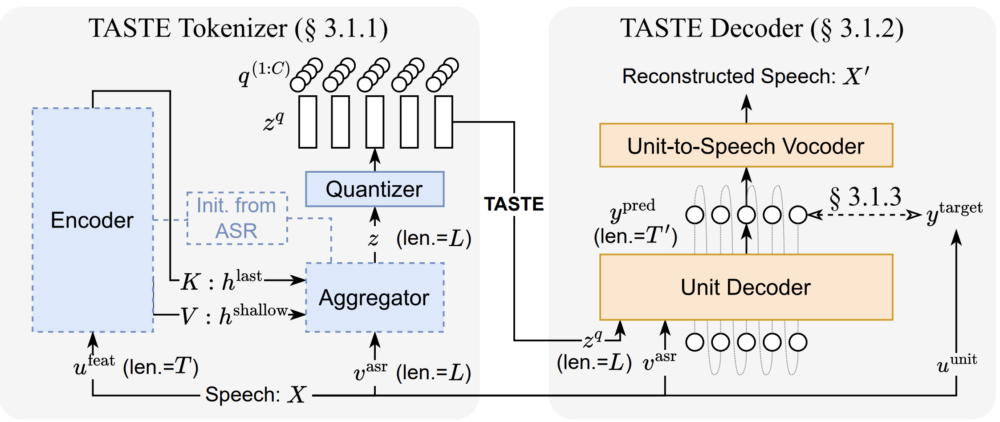
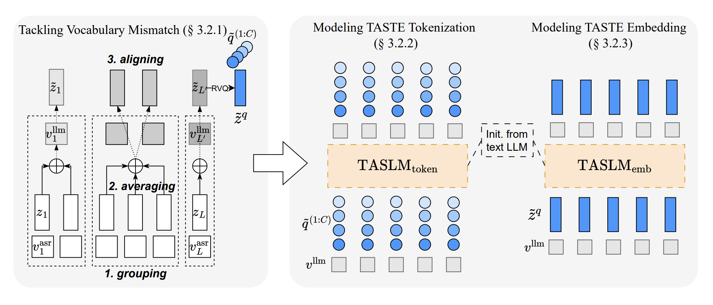

TASTE: Text-Aligned Speech Tokenization and Embedding for Spoken Language Modeling
[Paper] [Code]MediaTek Research
Abstract: Spoken Language Models (SLMs), which take speech as both input and output, have gained increasing attention for enabling more natural human-computer interaction. While recent multimodal approaches incorporate speech encoders into Large Language Models (LLMs), they typically generate only text outputs and face significant challenges due to the modality gap between speech and text—particularly the mismatch in token lengths. In this work, we introduce TASTE (Text-Aligned Speech Tokenization and Embedding), a method designed to align speech token lengths with their textual counterparts, thereby addressing the modality gap during the tokenization stage. TASTE eliminates the need for explicit word-level alignments while preserving rich paralinguistic information. We demonstrate that TASTE enables efficient and effective adaptation of text-based LLMs into SLMs using parameter-efficient fine-tuning methods such as LoRA. Empirical results show that TASTE improves generation quality and significantly reduces computational cost during both training and inference, offering a scalable and high-performance solution for spoken language modeling.
Stage 1: TASTE Speech Tokenization

Figure 1. ...
Demo: In-domain Speech Reconstruction
| Original Speech (from LibriTTS) | Reconstruction w/ TASTE Tokenization (ours) | Reconstruction w/o TASTE Tokenization |
|---|---|---|
I never expect to have any more. |
||
He examines the horizon all round with his glass and folds his arms with the air of an injured man. |
Demo: Out-of-domain Speech Reconstruction
| Original Speech (from Expresso) | Reconstruction w/ TASTE Tokenization (ours) | Reconstruction w/o TASTE Tokenization |
|---|---|---|
Given the circumstances, isn't this a little unorthodox? |
||
[confused] Given the circumstances, isn't this a little unorthodox? |
||
[enunciated] Given the circumstances, isn't this a little unorthodox? |
||
[happy] Given the circumstances, isn't this a little unorthodox? |
||
[laughing] Given the circumstances, isn't this a little unorthodox? |
||
[sad] Given the circumstances, isn't this a little unorthodox? |
||
[whisper] Given the circumstances, isn't this a little unorthodox? |
Stage 2: TASTE Spoken Language Modeling

Figure 2. ...
Demo: Speech Continuation
| Prompt | Speech Continuation |
|---|---|
The dark mystery of |
The dark mystery of the lost city of Atlantis has fascinated mankind for centuries. It is said that the city was located in the Atlantic Ocean, off the coast of modern-day Portugal, and was home to a civilization that flourished for thousands of years. |
I've managed to save some |
I've managed to save some money on my phone bill, but I'm still paying a lot for my internet. I'm not sure if I should get a new phone or just get a new internet plan. |
I reserve your services |
I reserve your services for a long time. I am very happy with the result. I will definitely recommend you to my friends. |
This powder must not |
This powder must not be used in the presence of water or other liquids. It is a very fine powder and should be used with a fine powder applicator. |
I’ll take the armchair |
I’ll take the armchair in the corner and just sit there. It’ll feel better. I’ll try to not sleep. |
Demo: Speech Generation with Text-only Prompt
| Text-only Prompt | Speech Generation |
|---|---|
| And then later on, fully acquiring that company. | It’s a very good example of how you can use the power of a platform to create a business that's going to be successful. |
| Rainfall alone does not constitute a storm. | It is the combination of Rainfall and Wind that causes the most damage. In the case of a storm, the wind is the most important factor. |
| Other sweet herbs are cultivated | for their medicinal properties. They are used to treat a variety of ailments, including coughs, colds, and other respiratory problems. |
| Tom: Hi! How are you today? END Jerry: I'm good, thanks! How about you? END Tom: Not bad. Just a bit tired from work. END Jerry: Me too. END Tom: | I've got a few minutes to talk to you. |
Disclaimer
The content provided above is for academic purposes only and is intended to demonstrate technical capabilities. Some examples are sourced from the internet. If any content infringes on your rights, please contact us to request its removal.